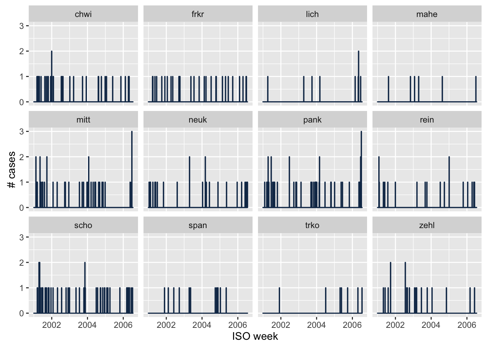
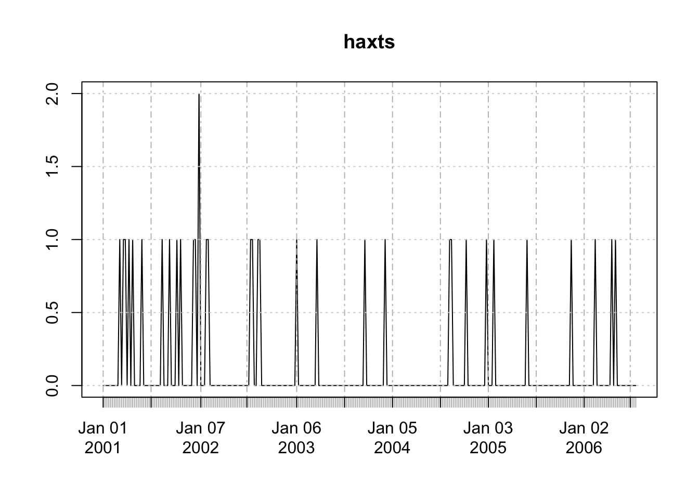

sts objects to various other classesThe surveillance package holds plenty of data sets from the public health surveillance of infectious disease occurrence. These count time series are objects of the class "sts" (surveillance time series), as illustrated in, e.g., the ECDC tutorial.
This vignette illustrates how to transform an "sts" object (back) to a "data.frame" or an "xts" object. We use
library(surveillance)
data("ha.sts")Transforming an "sts" object to a data frame cbinds the various contained matrices (observed, state, alarm, upperbound, population):
hadata <- as.data.frame(ha.sts, as.Date = TRUE)
head(hadata, 2)## observed.chwi observed.frkr observed.lich observed.mahe observed.mitt observed.neuk observed.pank
## 1 0 0 0 0 0 0 0
## 2 0 0 0 0 0 0 0
## observed.rein observed.span observed.zehl observed.scho observed.trko epoch state.chwi
## 1 0 0 0 0 0 2001-01-01 0
## 2 0 0 0 0 0 2001-01-08 0
## state.frkr state.lich state.mahe state.mitt state.neuk state.pank state.rein state.span
## 1 0 0 0 0 0 0 0 0
## 2 0 0 0 0 0 0 0 0
## state.zehl state.scho state.trko alarm.chwi alarm.frkr alarm.lich alarm.mahe alarm.mitt
## 1 0 0 0 NA NA NA NA NA
## 2 0 0 0 NA NA NA NA NA
## alarm.neuk alarm.pank alarm.rein alarm.span alarm.zehl alarm.scho alarm.trko upperbound.chwi
## 1 NA NA NA NA NA NA NA NA
## 2 NA NA NA NA NA NA NA NA
## upperbound.frkr upperbound.lich upperbound.mahe upperbound.mitt upperbound.neuk upperbound.pank
## 1 NA NA NA NA NA NA
## 2 NA NA NA NA NA NA
## upperbound.rein upperbound.span upperbound.zehl upperbound.scho upperbound.trko population.chwi
## 1 NA NA NA NA NA 0.08333333
## 2 NA NA NA NA NA 0.08333333
## population.frkr population.lich population.mahe population.mitt population.neuk population.pank
## 1 0.08333333 0.08333333 0.08333333 0.08333333 0.08333333 0.08333333
## 2 0.08333333 0.08333333 0.08333333 0.08333333 0.08333333 0.08333333
## population.rein population.span population.zehl population.scho population.trko freq
## 1 0.08333333 0.08333333 0.08333333 0.08333333 0.08333333 52
## 2 0.08333333 0.08333333 0.08333333 0.08333333 0.08333333 52
## epochInPeriod
## 1 0.01923077
## 2 0.03846154This enables post-processing of sts objects using other tools. For instance, to generate a plot of the data using ggplot2.
First we convert the data into a long format using tidyr and dplyr.
library(dplyr)
plot_data <- hadata %>%
tidyr::gather(counties, count, starts_with("observed")) %>%
tidyr::separate(counties, c("key", "county"), fill = "left") %>%
select(epoch, county, count)
head(plot_data)## epoch county count
## 1 2001-01-01 chwi 0
## 2 2001-01-08 chwi 0
## 3 2001-01-15 chwi 0
## 4 2001-01-22 chwi 0
## 5 2001-01-29 chwi 0
## 6 2001-02-05 chwi 0Then it is straight forward to plot data in ggplot2.
library(ggplot2)
ggplot(plot_data, aes(x = epoch, y = count)) +
geom_bar(stat = "identity", color = "#123456") +
facet_wrap(~ county) +
xlab("ISO week") +
ylab("# cases") 
The as.xts function can be used to transform sts data to the standard "xts" class for time series (there is also an as.ts-method):
library("xts")
haxts <- as.xts(ha.sts)
plot(haxts)## Warning in plot.xts(haxts): only the univariate series will be plotted
Up to old xts 0.9-7, this will only plot the first time series Newer versions of xts are available from the xts GitHub repository.
This also enables the use of the dygraphs package for interactive visualization:
dygraphs::dygraph(haxts)